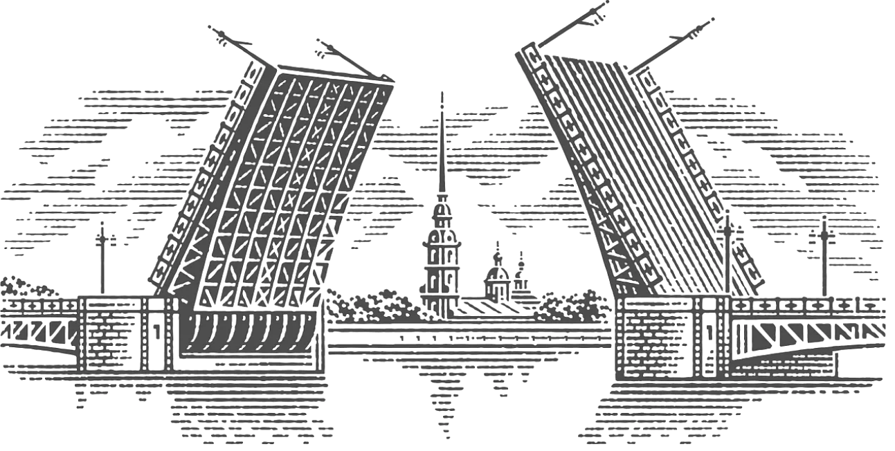

Литературный гид
По местам Достоевского
Прогулка по Петербургу Фёдора Михайловича — адреса из его жизни, адреса его героев, музеи и памятники. Выбирайте маршрут сами или идите по готовому — с цитатами, фотографиями и картой в руках.
Места из жизни
Квартиры, адреса, события биографии писателя в Петербурге.
📚Места из произведений
Дома Раскольникова, Сони, Рогожина и других героев.
🏛Музеи и памятники
Мемориальные музеи, памятники, исторические справки.
🗺Готовые маршруты
Продуманные пешие экскурсии по нескольким точкам сразу.
✏️Свой маршрут
Выберите тему и от 2 до 5 мест — маршрут соберётся сам.
🎲Случайное место
Не знаете, с чего начать? Пусть судьба укажет адрес.